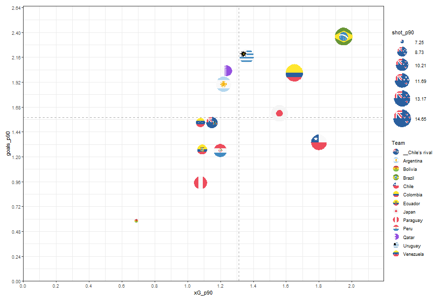
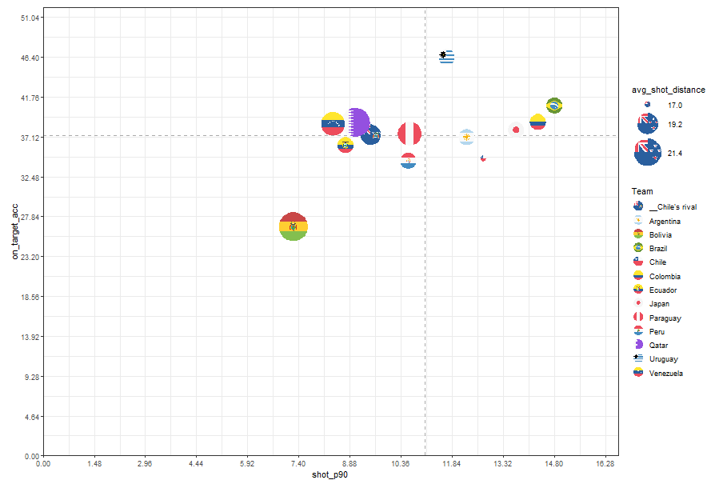
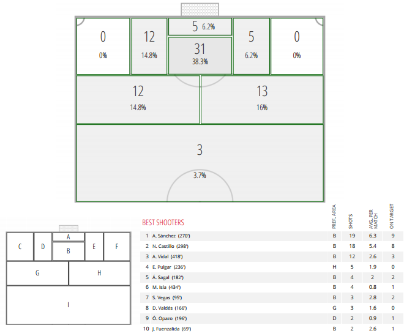
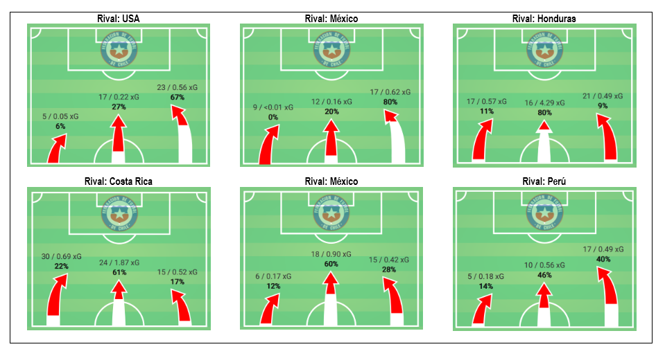
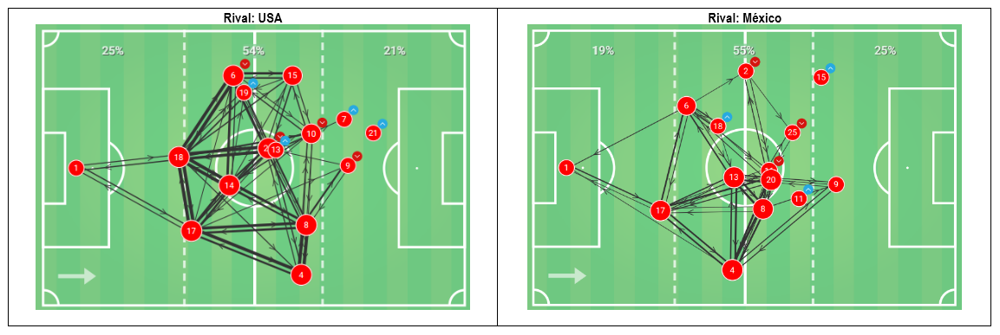
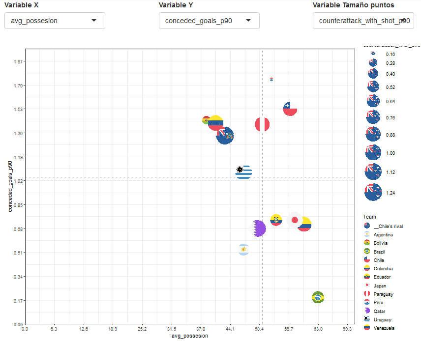
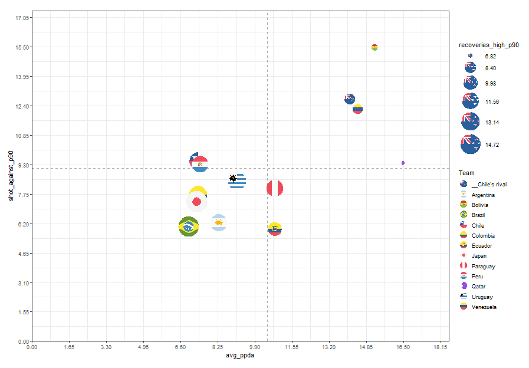
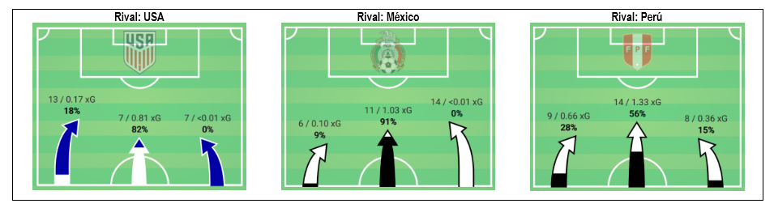

Independiente de los problemas de camarín que ha vivido La Roja, el profesor Rueda durante su periodo como seleccionador ha buscado a los intérpretes de su sistema de juego junto con las opciones del famoso recambio.
Luego de varios encuentros amistosos frente a rivales europeos y latinoamericanos llegó el momento de enfrentar su primer desafío “por los puntos”: la Copa América Brasil 2019 (La Copa), momento ideal para hacer algo de análisis de datos.
Si bien uno puede considerar diferentes tipos de datos para el análisis previo a La Copa, como por ejemplo los resultados históricos entre las selecciones o algo relacionado con los jugadores citados por cada selección (como lo hecho por Analítica Sport acá), en esta ocasión quise observar una muestra de los últimos partidos de cada equipo y su performance en ellos.
Las desventajas de esto son: 1) la mayoría de los datos corresponden a partidos amistosos, 2) son partidos contra rivales no necesariamente del mismo nivel de los que enfrentarán en La Copa, y 3) los jugadores citados a La Copa en algunos casos difieren con los que jugaron los partidos previos.
Aun así pienso que se pueden encontrar cosas interesantes para de algún modo tener nociones de “cómo vienen jugando los equipos en el último tiempo”.
Los datos
Consideré datos de Wyscout (prueba gratuita de 14 días) para los partidos jugados por las selecciones en el último año, descartando los partidos de Rusia 2018 en el caso de quienes jugaron el mundial.
La información ya viene agregada por partido, con distintas métricas asociadas a: tiros, goles, pases, posesión, efectividad, duelos, quites, y un montón más!
El principal preproceso de datos fue cambiar el nombre de algunas variables y hacer los cálculos ponderados de las métricas por cada 90 minutos, con tal de permitir la comparación entre ellos.
Para la mayoría de las selecciones se tienen entre 8 y 10 partidos. Las excepciones son Paraguay, que jugó menos partidos (6), y Qatar junto con Japón quienes además de los amistosos jugaron la Copa de Asia (completando 14 partidos en total cada uno).
Dado que centraré mi análisis en Chile, también se incluyen los datos de los rivales que Chile enfrentó en los 10 partidos considerados (USA, México, Honduras, Costa Rica, México, Perú, Corea, Polonia, Serbia y Rumania).
En la siguiente tabla se puede apreciar el listado de cantidad de partidos considerados para cada selección:
| Equipo | N_partidos |
|---|---|
| Japan | 14 |
| Qatar | 14 |
| Bolivia | 10 |
| Brazil | 10 |
| Chile | 10 |
| Peru | 10 |
| Venezuela | 10 |
| Argentina | 9 |
| Ecuador | 9 |
| Colombia | 8 |
| Uruguay | 8 |
| Paraguay | 6 |
¿Cómo llega Chile a la Copa América?
Para tratar de responder esta pregunta exploraré los datos de performance de Chile en sus últimos partidos en comparación a la performance de las demás selecciones, tomando en cuenta distintas métricas y separando el análisis entre lo ofensivo y lo defensivo.
Para facilitar lo anterior armé una visualización interactiva donde es posible elegir 3 variables (Eje X + EjE Y + Tamaño del punto) que construyen un gráfico de dispersión, permitiendo observar correlaciones y la posición de cada selección respecto a sus rivales en la Copa. Además se incluye con líneas punteadas y color gris el promedio de las variables elegidas para los ejes X e Y, además de los valores calculados para los rivales contra quienes Chile jugó en estos amistosos (“Chile’s rival” con la bandera de Australia por defecto).
Antes de detallar el análisis de Chile dejo acá la viz interactiva para que puedan jugar con ella:
Análisis ofensivo
- Chile genera ocasiones de gol de una calidad mayor al promedio, pero no las concreta.
El parámetro “xG_p90” corresponde a los goles esperados por cada 90 minutos. Esto depende de un modelo de probabilidades basado en resultados estadísticos según: la posición de los tiros (distancia y ángulo al arco), la parte del cuerpo utilizada (cabeza, pié hábil o no, volea, etc.), la cantidad de defensas tapando la línea entre el tiro y el arco, entre otras variables; permitiendo así cuantificar la calidad de las llegadas (tiros).
Si miramos este parámetro (eje X en la siguiente figura), Chile es el 2do equipo con mayor valor (1.8), después de Brasil (1.95).
El problema está en que al mirar la variable “goals_p90”, correspondiente a los goles reales por cada 90 minutos, Chile está bajo el promedio, siendo el único de los equipos que tienen xG_p90 mayor al promedio (con Uruguay, Japón, Colombia y Brasil) que está bajo el promedio de goles reales por 90 min [cuadrante inferior derecho]. Es decir, tiene problemas serios para concretar las llegadas que se genera.

- Chile genera una cantidad de tiros mayor al promedio, pero no le achunta al arco.
Profundizando el punto anterior, uno podría pensar que se genera ocasiones de buena calidad con pocos tiros, pero no es el caso: si miramos la cantidad de tiros por cada 90 minutos (eje X “shot_p90”), Chile está sobre el promedio. El problema está en que la precisión de esos tiros, es decir qué % de ellos va realmente al arco (eje Y “on_target_accuracy”), es de 35%, más baja que el promedio (37%), siendo nuevamente el único en el cuadrante inferior derecho:

Lo anterior parece difícil de creer cuando vemos que Chile incluso es el que en promedio patea más de cerca, lo que se puede ver con el tamaño de puntos en grafico anterior (“avg_shot_distance” en metros) y en la siguiente figura que contiene una muestra con la posición de algunos tiros de Chile (aprox. 65% de ellos dentro del área), también de Wyscout:

- Mirando otros datos, también de Wyscout, se aprecia que en general el peligro Chile lo genera principalmente por derecha, y en menor medida por el centro. Y como ha sido la tónica del último tiempo, la izquierda carece de poder ofensivo.
Las siguientes ilustraciones muestran los sectores de ataque de Chile en 6 de sus últimos partidos (sin considerar el partido con Haití). El número a la izquierda del “/” representa la cantidad de ataques por el sector respectivo, mientras que el valor a la derecha es el valor de xG acumulado, es decir la calidad de los ataques generados. El % indicado está calculado respecto al xG total.

En este contexto, si se observan las redes de pases y algunos pases ofensivos relevantes, Isla y Vidal son fundamentales:

Entonces, a nivel ofensivo tenemos que Chile presenta los siguientes desafíos:
Mejorar la efectividad de tiros al arco: Achuntarle al arco y marcar más goles. Vargas es el principal llamado a mejorar esto.
Junto con lo anterior: disparar más veces desde larga distancia. Frente a Haití se vio que Pulgar probó de buena manera.
Mantener la generación ofensiva por derecha y el centro, por supuesto sin descuidar la defensa. Será interesante ver lo que puede aportar Fuenzalida al asociarse con Isla y Vidal, lo que ya vimos en el partido con Haití. Y por el centro lo que puedan generar también por supuesto Aránguiz y Hernández.
Buscar la manera de crear peligro por izquierda, donde Beausejour u Opazo podrían aportar en el ida y vuelta y la asociación con Alexis.
Análisis defensivo
- Chile tiene alto % de posesión de balón promedio pero es el 2do equipo que más recibe goles cada 90 minutos
Si dejamos la posesión en el eje X (“avg_possession”) vemos que Chile promedia un 57%, formando parte de los equipos que tienen mayor posesión (junto con Brasil, Colombia, Japón, Ecuador y Paraguay), sin embargo al mirar la variable de goles en contra cada 90 minutos (eje Y “conceded_goals_p90”), estamos muy sobre el promedio (1.5 respecto a 1.0): Chile y Paraguay son los dos peores equipos desde este punto de vista (cuadrante superior derecho):

Incluso podemos verificar que sus rivales (arbitrariamente bandera de Australia en la visualización), tienen una cantidad alta de contraataques que terminan con tiros al arco (“counterattack_with_shot_p90”, tamaño del punto), lo que da señales de que cuando Chile pierde la pelota en campo contrario, en general le cuesta la recuperación y transición defensiva: los rivales finalizan esos contra ataques.
- Chile ejerce una presión alta, en general teniendo buenos números de recuperaciones, intercepciones y duelos defensivos; pero de todas maneras es el 2do equipo al que más tiros le generan por cada 90 minutos.
Chile está dentro de los 7 equipos que realiza mayor pressing (variable “avg_ppda” en eje X, correspondiente a los pases consecutivos que se le permiten al rival en su campo, en promedio. Esta variable tiene por supuesto gran correlación con las recuperacion en sector alto “recoveries_high_p90”), pero al comparar con la variable de tiros en contra por 90 minutos (“shot_against_p90”), junto con Paraguay son los únicos que se quedan en el cuadrante superior izquierdo:

En este sentido una de las métricas a mejorar también son las recuperaciones en mediocampo (“recoveries_med_p90”), que están bajo el promedio.
- Como complemento: en algunos de los partidos donde Chile más sufrió defensivamente lo hizo por ataques rivales por la zona central (punto de vista de xG del rival):

Entonces, defensivamente Chile presenta el desafío principal de mejorar la transición defensiva, lo que debiera permitir a) mayor cantidad de recuperaciones en mediocampo, b) que los contragolpes rivales no finalicen en tiros y c) llegar con más gente atrás para lograr molestar más a los tiradores rivales y así disminuyan su efectividad de gol.
¿Nos falta un volante de corte más efectivo?
¿Atacamos con mucha gente y nos descuidamos atrás?
Lo ideal sería contar con datos más detallados para ahondar en estos temas que exploramos, pero la prueba gratuita de Wyscout tiene sus limitaciones en este sentido.
Por ejemplo lo óptimo es contar con los datos desagregados por eventos, para hacer cosas como las que explico acá.
De todos modos como ejercicio inicial es útil para detectar y/o confirmar cosas acerca del juego de una selección en comparación, en este caso, con sus rivales de la Copa.
Esperemos que el profesor Rueda tenga todo esto y mucho más claro y lo esté trabajando!
Si no eres chileno, te invito a jugar con los datos y hacer un análisis de tu propia selección. Atento a comentarios en el twitter: @DatoFutbol_cl
O también, si quieres comentar o agregar algo al análisis de Chile, bienvenido. Por ejemplo, algo que no abordé es el análisis de los rivales del grupo.
Y por supuesto lo más importante, a disfrutar la Copa!